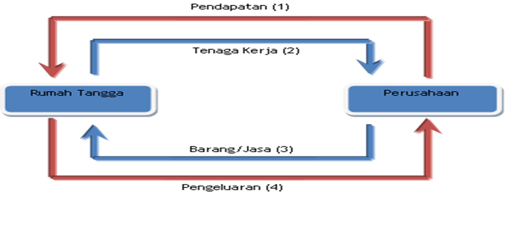
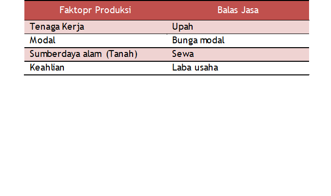
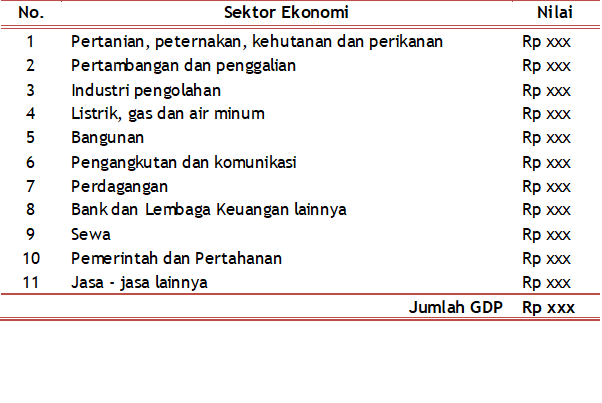
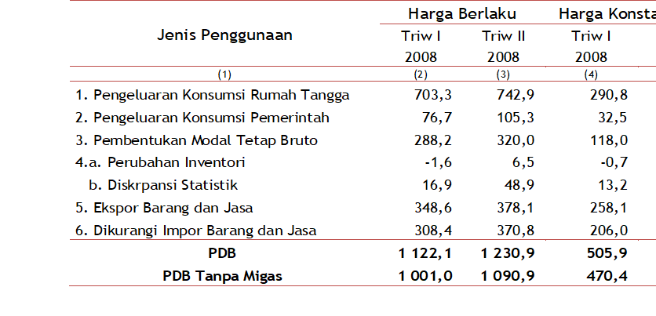
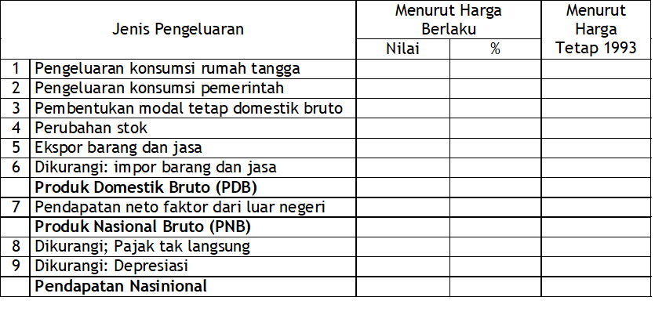

Konsep Dasar Ilmu Ekonomi dan Pendapatan Nasional
Tedy Herlambang
Cakupan Isi Materi
- Pengertian dan konsep dasar ilmu ekonomi
- Perbedaan antara ekonomi mikro dan makro
- Aliran-aliran ilmu ekonomi
- Isu-isu dalam ekonomi makro
- Pembangunan ekonomi
Konsep Dasar Ilmu Ekonomi
- Ilmu ekonomi sebenarnya didasarkan pada tiga (3) konsep penting, yaitu kelangkaan (scarcity), pilihan (choice), dan pengambilan keputusan (decision making).
- Ilmu ekonomi muncul karena manusia selalu ingin mendapatkan sesuatu melebihi sumberdaya yang dimilikinya.
- Ilmu ekonomi diperlukan untuk memahami bagaimana cara memenuhi keinginan yang tidak terbatas tersebut dengan sumberdaya yang terbatas.
Konsep Dasar Ilmu Ekonomi
- Mempelajari ilmu ekonomi –> kita dapat mengetahui penyebab munculnya berbagai permasalahan ekonomi, perilaku para agen ekonomi (rumah tangga dan perusahaan), dampak yang dihasilkan dari permasalahan ekonomi, dan pengambilan keputusan ekonomi yang rasional
- Ilmu Ekonomi –> membantu membuat keputusan ekonomi (manusia selalu dihadapkan pada pilihan dan mengambil keputusan)
Definisi Ilmu Ekonomi
- Istilah economics berasal dari bahasa Yunani kuno yaitu οἶκος (oikos, “rumah tangga”) + νόμος (nomos, “kebiasaan” atau “hukum”), dimana gabungan kedua kata tersebut dapat diterjemahkan sebagai “aturan/kebiasaan dalam rumah tangga”.
- Ilmu ekonomi adalah studi aktivitas produksi konsumsi dan pertukaran barang.
Definisi Ilmu Ekonomi..lnjt
- Ilmu ekonomi adalah ilmu tentang memilih, yakni bagaimana orang memilih memanfaatkan sumberdaya yang terbatas (pendapatan dan waktu) untuk menghasilkan tingkat kepuasan maksimal, serta bagaimana perusahaan memilih kombinasi input serta besaran dan jenis komoditas yang diproduksi (televisi, radio, kompor, dan sebagainya), serta mendistribusikan berbagai komoditas tersebut ke berbagai anggota masyarakat untuk dikonsumsi.
Definisi Ilmu Ekonomi..lnjt
- Ilmu ekonomi adalah studi tentang bagaimana masyarakat memanfaatkan berbagai sumberdaya yang langka untuk menghasilkan berbagai komoditas yang bernilai dan mendistribusikan komoditas-komoditas tersebut di antara berbagai kelompok. (Paul A . Samuelson)
Dua Pertanyaan Besar dalam Ilmu EKonomi
- Bagaimana dengan sumberdaya yang terbatas dan dihadapkan pada pilihan-pilihan yang ada, diambil keputusan tentang apa, bagaimana, dan untuk siapa barang-barang dan jasa diproduksi.
- Kapan pilihan-pilihan yang dibuat dalam rangka memaksimalkan kepentingan pribadi sekaligus juga mampu memaksimalkan kepentingan sosial –> Self interest sejalan dengan social interest
Konsep-Konsep Dasar dalam Ilmu Ekonomi
- Kelangkaan (scarcity)
- Pilihan-piliah (choices)
- Biaya Kesempatan (oppustunity cost)
- Alokasi (alocation)
Pendekatan Ilmiah dalam Memahami Ilmu & Kebijakan Ekonomi
- Pendekatan ilmiah menjadi kekuatan utama ilmu ekonomi dalam menganalisis perilaku agen ekonomi untuk menghasilkan suatu pengetahuan yang disusun dengan logika berpikir ilmiah –> salah satu sumber dari pengetahuan ekonomi adalah pengamatan terhadap berbagai peristiwa ekonomi, khususnya dengan mengamati kejadian di masa lampau.
Dalam mempelajari ilmu ekonomi perlu dihindari :
- Post hoc fallacy: kesalahan penarikan kesimpulan dari kejadian dua peristiwa secara beruntun: asumsi bahwa peristiwa pertama adalah penyebab dari peristiwa berikutnya ..yang tidak selalu benar.
- Kesalahan komposisi: anggapan bahwa sesuatu yang baik untuk satu individu maka baik pula untuk seluruh individu.
- Jika dalam tataran kebijakan, kesalahan komposisi terjadi ketika suatu kebijakan yang berhasil diterapkan pada suatu negara dianggap baik pula untuk negara lainnya.
Pendekatan Ilmiah dalam Memahami Ilmu & Kebijakan Ekonomi …lnjt
- Pasar seringkali gagal mengakomodasi kepentingan semua bagian masyarakat sehingga muncul yang disebut dengan market failure.
- Kebijakan ekonomi berperan penting dalam mengalokasikan serta mendistribusikan sumberdaya yang langka secara merata kepada masyarakat.
3 Fungsi pemerintah dalam kebijakan ekonomi:
- Fungsi stabilisasi: diperlukan pada saat perekonomian sedang mengalami kondisi yang buruk seperti ketidakstabilan seperti harga, nilai tukar, pengangguran tinggi.
- Fungsi alokasi: diperlukan jika terjadi kegagalan pasar dan menyediakan barang kebutuhan publik misalnya jalan raya, rumah sakit, sekolah.
- Fungsi distribusi: dibutuhkan jika terjadi ketimpangan antar masyarakat
Pendekatan Ilmiah dalam Memahami Ilmu & Kebijakan Ekonomi
- Kebijakan ekonomi terdiri dari dua yaitu :
- Kebijakan fiskal adalah jenis kebijakan mempengaruhi pasar barang dan jasa. Instrumen kebijakan fiskal yang biasa digunakan di antaranya pajak, penetapan bea dan cukai, serta anggaran dan belanja nasional.
- Kebijakan moneter merupakan kebijakan yang mempengaruhi pasar uang. Instrumen kebijakan moneter misalnya penetapan jumlah uang beredar, penetapan suku bunga sertifikat bank sentral, dan sebagainya.
Istilah dalam Ilmu Ekonomi
- Teori ekonomi adalah pernyataan atau sekumpulan pernyataan yang saling terkait dengan sebab dan akibat, serta aksi dan reaksi. Suatu teori berusaha untuk menjelaskan mengapa suatu peristiwa bisa terjadi dan apa dampaknya.
- Model adalah pernyataan formal dari sebuah teori. Sejumlah penyederhanaan melalui asumsi-asumsi tentang bagaimana sebuah perekonomian bekerja, berperilaku, serta melihat bagaimana jika dinyatakan dengan skenario yang berbeda Biasanya dalam bentuk pernyataan matematis dari dugaan hubungan antara dua variabel atau lebih.
Istilah dalam Ilmu Ekonomi
- Variabel adalah suatu besaran yang dapat mempunyai berbagai nilai dan merupakan unsur dasar dari teori sehingga setiap variabel harus dijelaskan dengan cermat
- Variabel terdiri dari variabel endogen, variabel eksogen, variabel stock, dan variabel flow.
- Asumsi: peranan penting untuk pembentukan suatu teori.
- Hipotesis adalah dugaan awal mengenai bagaimana hubungan antara dua atau lebih variabel.
Aliran dalam Ilmu Ekonomi
- Pandangan kaum ekonomi klasik
- Ekonomi Sosialis: Marx
- Ekonomi Neoklasik
- Revolusi Keynesian
Keynessian: - Pemerintah seharusnya campur tangan di dalam perekonomian - Tidak percaya bahwa pasar dapat self regulated
Klasik: - Pemerintah sebaiknya meminimalkan campurtangannya di dalam perekonomian - Percaya bahwa pasar dapat self regulated
Isu Utama dalam Ekonomi Makro
- Pertumbuhan Ekonomi–> persentase perubahan kegiatan dalam perekonomian yang diukur (salah satunya) dari persentase perubahan produksi barang dan jasa.
- Ketidakstabilan harga
- Masalah Pengangguran
- Masalah kenaikan harga –> inflasi
- Neraca pembayaran dan neraca pembayaran
PENDAPATAN NASIONAL (Modul 2)
Cakupan Isi Materi
- Pengertian/definisi Produk Domestik Bruto dengan Pendekatan Pengeluaran
- Pengukuran Produk Domestik Bruto dengan Pendekatan Pengeluaran
- Pengukuran Produk Domestik Bruto dengan Pendekatan Pendapatan
- Pengukuran Produk Domestik Bruto dengan Pendekatan Produksi (Nilai Tambah)
- PDB Nominal dan PDB Riil
- Perhitungan PDB di Indonesia
- Kelemahan PDB sebagai Pengukur Kinerja Perekonomian
- Indikator lain pengukur kinerja ekonomi suatu negara
Pengukur Produk Domestik Bruto
- Produk Domestik Bruto (PDB) adalah nilai pasar dari seluruh barang/jasa akhir yang dihasilkan oleh suatu negara dalam periode waktu tertentu.
Perhitungan Produk Domestik Bruto (PDB)
Terdapat tiga pendekatan yang dapat digunakan dalam menghitung PDB:
- Pendekatan pengeluaran:PDB dapat dipandang sebagai total pengeluaran yang dilakukan dalam perekonomian untuk memperoleh barang/jasa,
- Pendekatan pendapatan: PDB dapat dipandang sebagai total pendapatan yang diperoleh setiap individu yang terdapat dalam perekonomian.
- Pendekatan Nilai Tambah
Perhitungan Produk Domestik Bruto (PDB)

Perhitungan PDB dengan Pendekatan Pengeluaran
- PDB: total pengeluaran dalam perekonomian dengan rumus: \(PDB=C+I+G+NX\)
- Pengeluaran konsumsi (C): Komponen yang termasuk ke dalam variabel konsumsi adalah barang dan jasa yang dibeli oleh rumah tangga, yang dapat berupa barang tahan lama, barang tidak tahan lama, dan jasa.
- Pengeluaran investasi (I): kegiatan yang dapat meningkatkan kemampuan perekonomian dalam menghasilkan output di masa depan, yang dapat berupa peningkatan stok fisik dari modal, maupun stok non fisik.
Perhitungan PDB dengan Pendekatan Pengeluaran
- Pengeluaran pemerintah (G): tindakan pemerintah dalam membeli barang/jasa seperti pembelian peralatan militer dan pembangunan jalan
- Ekspor bersih (NX): transaksi perdagangan suatu negara dengan negara lainnya. Net ekspor ini dapat menggambarkan besarnya permintaan luar negeri terhadap barang yang dihasilkan oleh suatu negara. Nilai net ekspor ini dihitung dengan mengurangkan antara nilai ekspor dengan nilai impor suatu negara.
Perhitungan PDB dengan Pendekatan Pendapatan
- Pengukuran PDB dengan pendekatan pendapatan dilakukan dengan menjumlahkan seluruh komponen pendapatan yang terdapat dalam perekonomian.
- Pendapatan pada dasarnya adalah balas jasa terhadap input/faktor produksi yang digunakan dalam proses produksi. Perhitungan PDB dengan pendekatan pendapatan dapat dilakukan dengan mengikuti formula: \(PDB= w + r + S + \pi\), w adalah upah, r adalah bunga modal, S adalah sewa, dan \(\pi\) adalah laba usaha.
Perhitungan PDB dengan Pendekatan Pendapatan

Perhitungan PDB dengan Pendekatan Produksi
- Perhitungan PDB dengan pendekatan produksi (nilai tambah) ini pada dasarnya adalah perhitungan nilai ekonomi yang diciptakan oleh sektor-sektor ekonomi yang terdapat di suatu negara.
- Secara tidak lansung perhitungan PDB dengan pendekatan nilai tambah ini merupakan perhitungan PDB yang dilakukan per sektor ekonomi Di Indonesia, hasil perhitungan PDB dengan pendekatan nilai tambah ini disajikan menurut sembilan sektor ekonomi.
Perhitungan PDB dengan Pendekatan Produksi

PDB Nominal & PDB Riil
- PDB riil merupakan produksi barang/jasa yang dihitung dengan menggunakan harga konstan dilakukan dengan menggunakan harga tahun dasar di setiap tahun perhitungan PDB.
- PDB nominal adalah produksi barang/jasa yang dihitung dengan menggunakan harga masa sekarang
- Di antara PDB riil dan PDB nominal, indikator yang paling baik digunakan untuk mengamati kinerja perekonomian adalah PDB riil peningkatan nilai PDB riil ini mutlak hanya mencerminkan peningkatan output produksi suatu perekonomian.
PDB Nominal & PDB Riil
- Sedangkan PDB nominal, peningkatan nilainya tidak serta merta disebabkan oleh terjadinya peningkatan output perekonomian, namun juga dapat disebabkan oleh terjadinya peningkatan harga.
- PDB deflator merupakan nilai yang mencerminkan harga barang dan jasa. diukur dari perbandingan antara PDB nominal dan PDB riil
- Deflator PDB mengukur tingkat harga-harga saat ini relatif terhadap tingkat harga-harga di tahun pokok
Penerapan Perhitungan PDB di Indonesia
- Di Indonesia, perhitungan PDB dilakukan oleh Badan Pusat Statistik (BPS) setiap tiga bulan sekali dimulai dengan kuartal I (periode Januari-Maret), kuartal II (periode April-Juni), kuartal III(periode Juli-September), dan kuartal IV (Oktober-Desember):
- Perhitungan PDB tahunan dengan cara merekapitulasi data PDB kuartalan yang telah ada.
Penerapan Perhitungan PDB di Indonesia
- PDB Indonesia dihitung dengan menggunakan pendekatan pengeluaran dan pendekatan nilai tambah.
- Pendekatan pengeluaran: komponen pengeluaran dikelompokkan atas lima kelompok, yaitu konsumsi rumah tangga, konsumsi pemerintah, investasi, dan ekspor bersih.
- Pendekatan nilai tambah, perekonomian dikelompokkan atas sembilan sektor
Penerapan Perhitungan PDB di Indonesia
- PDB indonesia Berdasakan Pendekatan Pengeluaran (dalam ribuan rupiah)–> BPS

Kelemahan PDB Sebagai Pengukur Kinerja
- Tidak memperhitungkan kerusakan lingkungan yang terjadi
- Tidak memperhitungkan kegiatan jual beli yang dilakukan tanpa melalui pasar
- Tidak memperhitungkan pendapatan warga negara Indonesia di luar negeri
- Menghitung pendapatan warga negara asing yang bekerja di Indonesia
- Tidak memperhitungkan kualitas kesehatan dan pendidikan
- Tidak memperhitungkan adanya transfer payment yang dilakukan pemerintah. Yang dimaksud dengan transfer payment adalah sejumlah uang yang diberikan kepada seseorang tanpa adanya aktivitas produksi yang dilakukan orang tersebut.
Indikator Lain Pengukur Kinerja Ekonomi Suatu Negara
- Produk Nasional Bruto (PNB): merupakan produksi barang/jasa akhir yang dihasilkan oleh warga suatu negara di manapun dia berada dalam periode tertentu.
- Produk Nasional Neto (PNN), yaitu total pendapatan penduduk suatu negara (PNB) dikurangi dengan kerugian yang diakibatkan oleh depresiasi.
Indikator Lain Pengukur Kinerja Ekonomi Suatu Negara (2)
- Pendapatan Nasional (National Income): untuk memperoleh gambaran tentang total penerimaan yang diperoleh oleh faktor produksi dalam negeri pendapatan nasional tidak menghitung pajak usaha tidak langsung dan menghitung subsidi usaha.
- Pendapatan perseorangan: pendapatan yang diterima rumah tangga dan usaha yang bukan perusahaan.
- Pendapatan perorangan yang dapat dibelanjakan (disposable personal income): pendapatan yang tersisa dalam rumah tangga dan usaha bukan perusahaan setelah semua kewajiban pada pemerintah dibayar.
Perhitungan Pendapatan Nasional Indonesia
